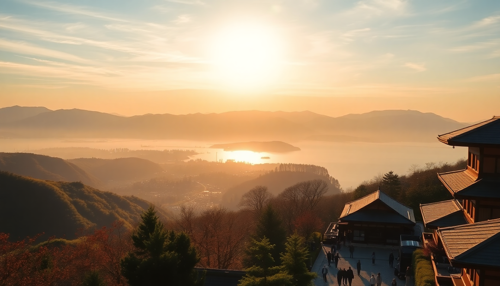

Where to Stay in Hakone: Best Ryokans for Every Budget

I remember standing at the window of our tiny ryokan room, watching steam rise from a nearby onsen into the chilly mountain air, and thinking: this is why I came to Hakone. But finding the right place to stay—without blowing your budget or ending up in a soulless business hotel—takes some digging. I’ve sorted through the options so you don’t have to. Here’s where I’d book, from splurge to steal.
What’s the best luxury ryokan in Hakone?
If money isn’t the main concern, Gora Kadan is the gold standard. Originally a summer villa for the imperial family, this place wraps you in quiet luxury from the moment you slip off your shoes at the entrance. The private open-air baths in each room look out onto bamboo groves, and the kaiseki dinner—served course by course in your room—is some of the best I’ve had in Japan.
For a slightly less formal but still top-tier option, Fujiya Hotel in Miyanoshita offers old-world charm. It’s been running since 1878, and the main building feels like a Victorian hunting lodge crossed with a Japanese inn. The indoor pool and Western-style rooms make it a good pick if someone in your group isn’t keen on sleeping on tatami.
- Gora Kadan – private onsen in every room, imperial pedigree, kaiseki dinner included
- Fujiya Hotel – historic property, mix of Western and Japanese rooms, indoor pool
- Hakone Ginyu – all rooms face the valley, private outdoor baths, incredible breakfast
What’s the best mid-range ryokan in Hakone?
Mid-range in Hakone usually means you get a shared onsen but a private, clean room with dinner included. My favorite here is Yama no Chaya, tucked into the forest near Miyanoshita. The rooms are simple but spotless, and the communal bath overlooks a mossy rock garden. Dinner is a multi-course affair with local tofu and wild vegetables, and the staff remembers your name by the second meal.
Another solid bet is Hakone Suishoen in Gora. It’s a bit more modern—think dark wood, stone pathways, and a sleek lobby—but the onsen water is true Hakone sulfuric spring, and the outdoor rotemburo feels like bathing in a cloud. Book a room with a private bath if you want to soak at 2 a.m. without company.
- Yama no Chaya – forest setting, excellent kaiseki, peaceful garden onsen
- Hakone Suishoen – modern ryokan, two large public baths, private bath options
- Hotel Okada – big hotel with a massive outdoor onsen, good for families
What’s the best budget ryokan in Hakone?
Budget ryokans in Hakone often mean shared bathrooms and simpler meals, but the hospitality is still genuine. I stayed at Tanzan in Hakone-Yumoto and was surprised by how much I got for the price. The tatami rooms are small but cozy, the indoor onsen is clean and hot, and the dinner—while not kaiseki—still had grilled fish, simmered vegetables, and a bowl of rice. It’s a 10-minute walk from Hakone-Yumoto Station, so you can ditch your luggage quickly.
For something even cheaper, Hakone Tent in Sengokuhara is more of a hostel with private rooms, but it has a real onsen (not a fake spa bath) and a common area where travelers swap hiking tips. Rooms are basic—futon on the floor, shared toilet—but it costs about a third of a mid-range ryokan.
- Tanzan – private rooms with shared bath, dinner included, near station
- Hakone Tent – hostel-style with private rooms, real onsen, social vibe
- Guesthouse Azito – capsule-style beds, super cheap, clean common baths
Where should I stay for the best onsen experience?
If soaking is your main goal, skip the budget places and aim for Gora Kadan or Hakone Ginyu—both have private outdoor baths that let you sit in near-scalding water while staring at a mountain slope. But if you want variety, Yunessun (the theme-park onsen) is nearby, and many ryokans offer day passes. I’d still pick a place with its own natural spring.
- Gora Kadan – private open-air bath in every room
- Hakone Ginyu – valley-facing private baths, two huge public onsens
- Yama no Chaya – single gender-separated outdoor bath with garden view
What’s the best area to stay in Hakone?
Hakone is spread out along the train and bus lines, so where you stay affects your daily movement. Hakone-Yumoto is the gateway—convenient for the Romancecar train, with lots of restaurants and shops. Gora is higher up, closer to the Open-Air Museum and the cable car to Owakudani. Miyanoshita is a quiet middle ground, and Sengokuhara is best for hiking the old Tokaido road.
I’d recommend Gora for first-timers: you’re central to the loop course (train, cable car, ropeway, pirate ship), and the ryokans there tend to have better views.
- Hakone-Yumoto – easiest access from Tokyo, many budget options
- Gora – central for sightseeing, best ryokans, cable car hub
- Miyanoshita – quiet, historic, Fujiya Hotel and Yama no Chaya
- Sengokuhara – hiking, fewer crowds, cheaper stays
How do I get to my ryokan from Tokyo?
Most people take the Odakyu Romancecar from Shinjuku to Hakone-Yumoto (about 85 minutes). From there, local trains or buses go to Gora, Miyanoshita, or Sengokuhara. If your ryokan is in Gora, you can switch to the Hakone Tozan Railway—it’s a charming little train that climbs through switchbacks and tunnels. Book the Romancecar in advance online; unreserved seats fill up fast on weekends.
- Odakyu Romancecar – reserved seat required, book online
- Hakone Tozan Railway – scenic ride from Hakone-Yumoto to Gora
- Hakone Free Pass – covers trains, buses, cable car, and ropeway for 2-3 days
What should I eat near my ryokan?
Kaiseki dinner is often included with ryokan stays, but for lunch or a snack, don’t miss Kuro-tamago—hard-boiled eggs turned black by the sulfur springs at Owakudani. They’re said to add seven years to your life. For a proper meal, Itoh Dining by Nobu in Gora serves a mean wagyu curry, and Hakone Bakery in Miyanoshita has excellent sourdough and coffee.
- Owakudani – black eggs, volcanic views, ropeway station
- Itoh Dining by Nobu – wagyu curry, casual, near Gora station
- Hakone Bakery – sourdough, pastries, good coffee
FAQ
What is the best time of year to stay in a ryokan in Hakone? Autumn (late October to mid-November) for the leaves, or winter (December to February) for crisp air and fewer crowds. Summer is humid and the onsen feels less appealing. Spring is beautiful but packed with cherry-blossom tourists.
Do I need to book a ryokan with dinner included? Yes, for most traditional ryokans. Many are in remote spots with few restaurants nearby, and dinner is a core part of the experience. If you book a budget place without meals, check if there’s a konbini or restaurant within walking distance.
Can I use the onsen if I have tattoos? It depends. Some ryokans like Gora Kadan and Fujiya Hotel allow tattoos in private baths only. Smaller places may refuse. Check the policy before booking, or look for “tattoo-friendly” listings.
Conclusion
- Splurge at Gora Kadan for private onsen and imperial-grade service
- Mid-range at Yama no Chaya for a genuine ryokan feel without the price tag
- Budget at Tanzan for a clean, affordable stay near the station
- Book Gora as your base for easy access to the loop course
- Always confirm tattoo policy and meal inclusion before you reserve